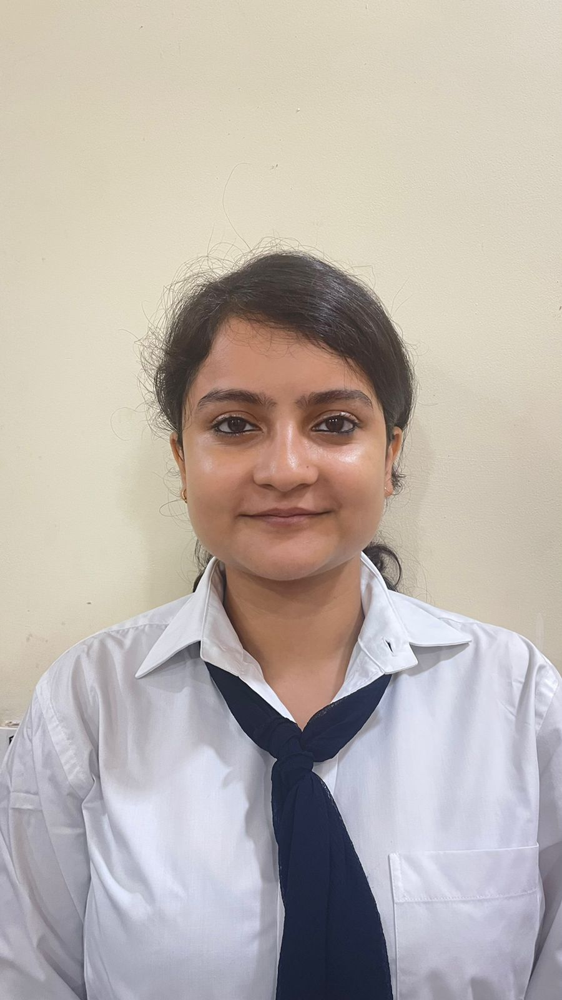

Tanisha Rai

About me
I am a very hard-working, self-motivated, willing, and have never stopped myself from learning. I am also a disciplined person who never backs out of work.
Education
- 10th - NEW HORIZON SCHOOL, BHAGALPUR(2015-2016)
- 12th - BSN ACADEMY, KOTA(2017-2018)
- Graduate - Lovely Professional University(2019-2023)
Skills
- Undergraduste CourseWork
- HTML
- CSS
- Database Management System
- Programming Languages
- Tools
- Inter Personal Skills
- Team Player
- Fast Learner
- Positive Psycology
Projects
1. Donato
Feb 2023 - May 2023
- In this project, we used a wide range of technologies, in-
cluding HTML, CSS, Javascript, ReactJS, NodeJS, and Ma- chine Learning Algorithms.
- The web app facilitates a donation platform where senior students can generously contribute various items such as buckets, mugs, copies, books, beds, and other utensils to support their junior counterparts in need.
- The system design of this web App is crucial for creating a website that is scalable, efficient, and easy to maintain
2. Facial Expression Detection System using CNN
Jan 2022 - June 2022
- In this project, I utilized the power of CNN with Keras,
applied image processing techniques through OpenCV, and leveraged Kaggle Kernel for data exploration and analysis.
- A Deep Learning CNN model for Facial Emotion Recog- nition was developed to understand human emotions by analyzing faces, and it can be employed for educational purposes, such as providing feedback on students’ reac- tions in the classroom.
Certifications
Important Links
- Geeks For Geeks
- Hackerrank